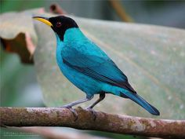
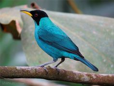
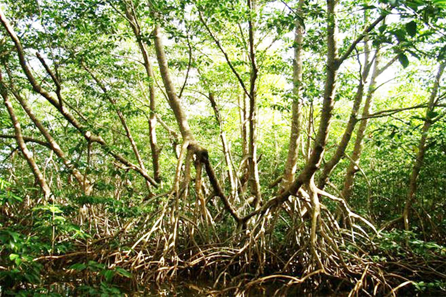
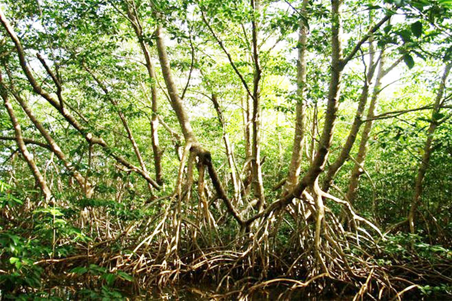
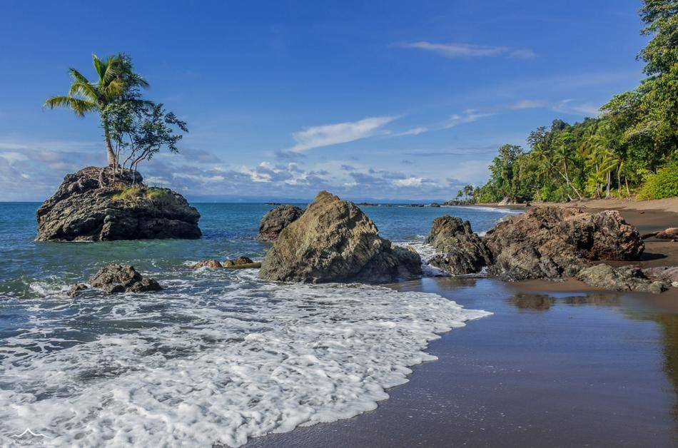
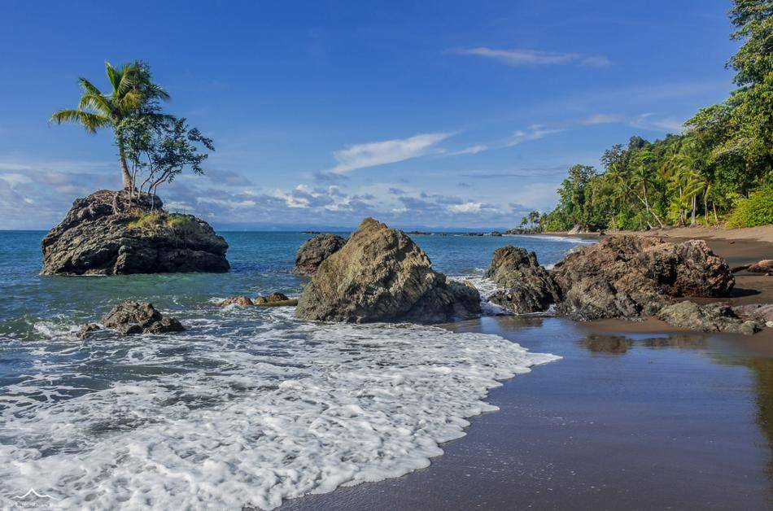

La ballena jorobada también es conocida por los nombres Yubarta y Gubarte. Realmente es un rorcual, ya que no
pertenece a la familia Balaenidae que le otorgaría el nombre de ballena, pero aun así, en idioma español es
conocida como ballena jorobada. Son cetáceos misticetos, es decir, contienen barbas en vez de dientes.
Alimentación:
Las diferentes especies de ballenas se alimentan principalmente de crustáceos planctónicos o micronectónicos
y cardúmenes de pequeños peces. Sin embargo, no todas las especies de ballenas utilizan el mismo modo de
capturar estos crustáceos o peces.
Comportamiento:
Los científicos han observado a las ballenas lanzarse y zambullirse repetidamente, dejando salir un picante
olor a pescado de los soplos de la ballenas. Los cruceros de los investigadores observaron este comportamiento
en 2011, 2014 y 2015 durante los meses de octubre y noviembre, que son la temporada de primavera-verano en
Sudáfrica.Estos supergrupos parecen ser fluidos, pues algunas ballenas se unieron a ellos y después los
dejaron. Los
investigadores también han observado que algunos de estos animales viajaron desde muy lejos para unirse a los
grupos masivos.


 

 

 
